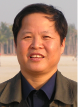
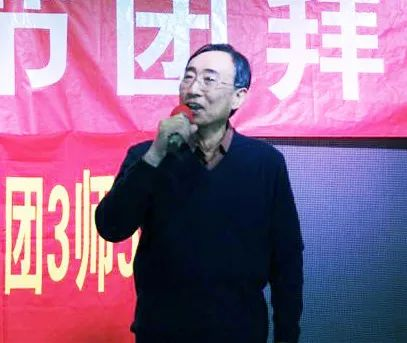
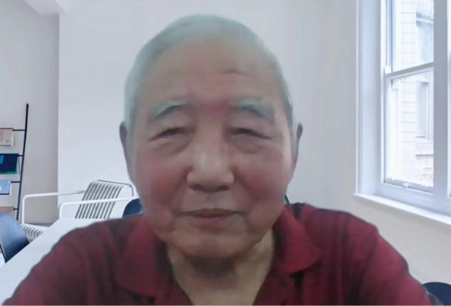
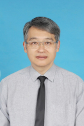

个人介绍

明世祥教授，北京科技大学教授，博士生导师，兼任中国金属学会采矿专业委员会秘书长。毕业于北京钢铁学院采矿工程专业，后留校任教，先后任采矿工程系讲师、副教授、教授。从事大学采矿教育已近50年,其教学和科研经验丰富,学术成果累累,桃李满天下,是我国著名的采矿工程专家。先后在近20处大型矿场进行采矿技术攻关课题研究，主持和参与完成的科研课题40多项，取得多项具有国际先进水平的研究成果。对矿山地下爆破技术研究也深有造诣，曾主持井下40t药量以上的大爆破十余次。发表论文50余篇，先后获得国家科技进步奖1项；省部级奖20多项。由于对矿山科技进步有突出贡献，1993年受到冶金部的通报嘉奖，并获国务院颁发的政府特殊津贴。
求学篇
我在1973年进入北京科技大学采矿专业，最初并不清楚此专业具体内容，但是被求知欲所驱使，仍然决定向着这个方向继续学习。而在当时，技术力较为落后，采矿工程十分艰苦，很多时候都想放弃，但又被身边人的义无反顾所打动，坚定了学习的信念，立志为为国家进步做贡献。除去环境的困难，很多时候也受困于缺少先进经验技术。但是我们有决心，一直觉得能够靠自己的力量成功突破难题。而历经了几十年的学习实践，我终于也能算是采矿领域的专家了。
科研篇
很多时候都感觉我所获得这些成就并不是完全出自于自己的努力，而更多的则是靠着咱们学校的业界声誉，很多科研项目我能有幸接手，都得好好感谢一下咱们的学校。 采矿这个专业其实辐射范围很广，而我的研究的方向则是与打矿井息息相关。在机器技术并不发达的当时，采矿是十分困难和危险的，常伴随着生态破坏与安全隐患，对技术理论要求很高。然而在国家与科研人员坚持了这么多年后，如今的采矿已经翻天覆地。不仅安全性大大提高，更有“填充法”等保护生态的方法，而相信不久的将来“花园式”采矿将成为生态保护的重点。
获奖篇
一店一门两洼工程设计完成后生产开始遇到了很大的困难，急切的需要科研攻关。除了北京科技大学，还有东北大学，中南大学，冶金职工大学也在在进行研究。进行了长达三年的科技攻关，还是我们最终凭借施工成本低，技术合格得到了认可，也因此获得了国家科学进步奖。在当时获得这样一个奖项是十分不容易的，自己也非常高兴。
寄语篇
在总书记“回信”中提到的“严谨治学，敢为人先”的精神是非常重要的。我们的校训就是“求实鼎新”。在工作生涯中，我一直认为自己并非代表个人，而是代表着学校。我的言行以及成败都影响着学校的声誉，个人与学校荣辱与共，这是我对自己的要求，也是对自己的激励。 如今想对同学们说的就是“责任感”。在我们具备了对职业的责任感之后，才能够与国家的命运联系在一起。我能上得了大学，这是国家给我的机会，我一定会尽自己所能去遵守自己的职业守则，在自己的领域踏实工作，以此回报国家。 对同学们想说： “要阳光，要能够在本专业、要在学校学习这个有限的时间内努力学习，加强各方面的锻炼，能够在将来从事的工作当中做出较大的贡献，为我们的母校增光添彩。”
个人介绍

刘庭成教授，1976年毕业于北京钢铁学院，留校任教，从事教学和液压传动技术及设备科研工作。1985年开始从事高压水射流课题的研究，高压水射流行业在国际上是从上个世纪70年代开始出现的，70年代末，我国的科技界紧随其后，在当时的北京钢铁学院，也就是现在的北京科技大学成立了高压水射流技术研究课题小组，刘庭成教授时任该课题组成员之一。1993年任北京科技大学高压水射流研究所所长。2002年1月8日成立北京科大九阳科技有限公司，任总经理。其科研成果为国家节省了大量资金，并先后获得《国家颇火炬计划项目证书》、河北省科技进步奖、冶金科技部领发的科学技术进步奖等奖项。
学习篇
Q：您能不能向我们介绍一下您自己的求学经历？分享一些学习体会？
A：求学经历其实跟大多数老师都差不多。我自己的体会是应该珍惜上大学这个机会，学好每一门课程。不要因为不喜欢某个课或不喜欢某个专业就不认真，这种想法是不正确的。其实咱们上大学，更多的还是学理论、掌握学习方法、锻炼学习能力和学习思维等等。就比如，我是矿山机械专业毕业的，学的内容就与采矿及其设备相关，这些东西后来就成为了我从事高压水射流技术研究的基础。不过，当时我学习这个专业的时候也没有想到过会去研究高压水射流技术，我在上学的时候还没听说过这技术呢。搞研究，理论先行；学理论，重在专业知识积累
Q：大一的课程通识性强，很多同学就比较迷茫，不知道往哪个方向发展。您能给这些同学一些建议吗？
A：我认为，上大学就是为了学习。同学们首先要把各门课程学好，打好基础，不要想太多其他的事情。总想着将来怎么样、干什么、在哪发展，是会影响基础课程的学习的。
Q: 现在有一种论调，很多人认为咱们采矿、冶金专业特别艰苦，越来越多的人不愿意去学，但是这些专业是国家发展需要的。是什么推动着您从事这个行业，并且能坚持下去，不断奉献自己？
A: 现在有这种想法的学生也不少，这些专业确实很艰苦，不过我还是那观点：既然你进到冶金专业，进入到学校学习。不管喜欢不喜欢都得打好基础，培养能力，就算将来改成计算机或是管理，能力也不会太差。基础理论雄厚，别的能力才会提高。现在大环境都非常好，怕艰苦，那还搞什么工作？什么工作都搞不来才叫艰苦。
Q:在您看来，我们应该如何把所学知识运用到报效祖国？
A: 不管学什么专业，得静得起来。你静下心学好了，再和工作结合起来，就能够做出贡献。一步步做，积少成多。
教学篇
Q: 您在北科任教多年，能介绍一下您的教学经历吗？
A：当时我讲课的时候还是非常认真的，觉得应该把自己的知识认真地传授给同学们。那时矿山机械专业课的内容比较杂，当时我就想怎么把课讲好，特别是怎么把第一堂课讲好。我第一次站上讲台时，好多老教师都对我非常关心。我试讲完，这些老教师们给我提好多问题，纠正我讲课的声音、动作，说我那儿应该怎么样、怎么改、还有要注意什么等等，最后我的讲课获得了教学优秀奖。现在我一直还记着这些，不过最后的获奖，我也没想到会是我。工作只要认真去做，做出成绩来，必然会得到肯定，但我的目的不是这个，我的目的是把学生教好。我上课从来没迟到过，一般都提前三分钟左右到教室门口——无论做什么事都要对自己严格要求。老师嘛，要言传身教，做一个表率。
科研篇
Q: 科研项目的带头人一般需要具备什么素质呢？
A: 首先，他应该在一些科研技术问题上研究得更多一些，更深一些，还得掌握一些新技术；其次他领导团队的水平要高。科研还是很艰苦的，有时我们遇到一些问题，这一段时间脑子里转的都是这事，都想着这事。所以，带头人既要有不放弃的决心，也要有能成功的信心。将来你们也应该这样，要有这种精神，才能够做好。
Q: 您在做研究的时候肯定也会遇到困难。可以介绍一下您是如何克服困难的吗？
A：在科研工作中，困难是经常要遇到的。科研的项目肯定是个难题，所以我们才需要研究。我们一定不能脱离实践，不怕艰苦。不能总是在计算机前面解决问题，我们应该要到现场中体会思考。在现场中的感受是不一样的，就像旅游，网络上的旅游与你亲身到达旅游景点的旅游，感觉是完全不一样的，这时候想法、灵感可能就有了。
获奖篇
Q：在您研究高压水射流技术的时候，有没有想过会获得奖项？
A：以前车间工人的劳动环境比较恶劣，劳动强度也大，我们经过调研、研究出的高压水射流清洗技术，非常绿色环保。冶金部的鉴定十分认可这个技术，因为这改变了落后的传统清洗技术。最后我们的项目获得了一个冶金部的科学进步奖，当时也没想到要获奖，只是想把这个技术搞得更好，从而能够解决生产中的实际问题。但是工作做好了、出成果了，获奖也就是自然而然的了。
寄语篇
Q：习近平总书记在给咱们学校老教授的回信中提到了“严谨治学、甘为人梯”的精神。您结合自己漫长的任教生涯中，有什么体会或联想到什么了吗？
A：习近平总书记回信的老教授中，我也在其中之列。我应该算年纪大的了，所以感受挺深的。虽然我们已经退休了，但这是对我们一生的鼓励和肯定。
Q: 我们人的性格可能会随着周围环境的变化而变化。冒昧请问一下，您在从事科研这么多年的过程中有没有觉得自己的性格会随着做科研而逐渐有一些变化？
A: 这个问题挺有意思。我觉得自己没怎么变化，还是比较开朗，爱跟大家一起讨论问题，遇到问题大家一起研究。有时工作压力大或者难度很大的时候，我们也没有放弃，一直坚持，到最后获得成功。我认为一个学生，现在也好，将来也好，都应该拥有一个好的心态，有点自己的爱好，有一项自己喜欢的体育活动。同学们要注意锻炼身体，身体好了，才有革命的本钱。我就喜欢户外的体育运动，我现在还经常在咱们学校的操场打网球。
Q: 对于今年入学的学生们，和我们即将升入大二的学生们，还有现在从事科研的我们的师兄师姐一些寄语？
A：学好每一门课程，踏踏实实的，加深巩固知识。要有面对困难不放弃的精神。不要考虑太多：我将来发展什么？我能不能当院士？我能不能当上高级领导？有目标也好，但总归是需要一步一步来的。
个人介绍

沈卫平，北京科技大学工学博士，材料科学与工程学院教授，硕士生导师，高级工程师。 从入学金属物理专业起，已在北京科技大学学习和从事材料和冶金领域的生产、教学、科研工作40载，曾任校实验工厂冶金车间主任，曾在俄罗斯和奥地利进行合作研究。已独立或与他人合作发表论文80余篇，参与出版译著《纯物质热化学数据手册》，参编校内教材《无机材料物理化学实验讲义》，获中国发明专利、国防专利和实用新型专利授权12项，获教育部科学技术进步奖二等奖和材料研究学会科学技术二等奖。 主要从事粉末冶金、结构陶瓷、聚变堆材料和模具钢的研究和开发，负责和参加过国家重点科技项目、国家863计划、国家磁约束核聚变能研究专项、国家自然科学基金等的课题研究。
求学之路
Q：老师您是哪一年加入我们北科这个大家庭的呢？能否简要介绍一下您的求学经历？
A: 我是七四年经由工农兵学员内部推荐选拔来到北京上学，就读于科大的金属物理专业。七七年底毕业留校，之后读硕士，博士，最后也在咱们学校当了教授。
科研之路
Q:您从事科研这么多年中，性格是不是也会随着科研工作而改变？什么性格适合做科研工作呢？
A: 人的性格当然是会变的。因为我们搞科研，也要跟社会、企业里各种各样的人打交道，所以也起到了很大的锻炼作用，我们的社交能力会得到提高，原本内向的同学也会变的外向起来
Q:在团队合作中，项目的带头人一般要有什么样的要求？
A: 首先你要有很好的学术基础，要选对研究方向，参加学术会议、学术讨论等等；其次你的动手能力要强，综合素质要全面，要以身作则；最后要能够调动团队成员各方面的积极性，做好组织管理工作。
Q:对于解决卡脖子问题，我们的科研工作人员有些什么想法？
A: 有的时候我们可以通过思考来找到破解方法，或者可以改进制造工艺等等；有些棘手问题，可能存在很多无法解决的点，比如材料本身的特性、设备的落后等等，我们就要全面考虑问题，在某一个地方碰到阻力，可以考虑从其他方面入手，用别的方法来解决这个问题。
Q: 老师您有什么方式可以让自己化解自己学习、科研上的焦虑和压力？
A: 家庭的理解支持很重要，让我们没有后顾之忧，另外我们需要有冷静分析的能力来改进自己的思路，多跟其他人讨论也是一个解决焦虑的好方法。做科研当然会有焦虑，没有焦虑就没有动力了嘛，要想解决问题就会有焦虑产生，我们善于处理它就好了。
精神传承
Q:在习近平总书记给咱们学校老教授的回信中提到了“严谨治学，甘为人梯”的精神，您对这种精神有没有自己独到的见解？
A: 我们北科大对于国家的发展，特别是钢铁工业中做出了很多贡献，解决了很多国家的重大需求，这么多年来，一代一代的北科人把这种习总书记提到的“严谨治学，甘为人梯”精神传承下来，从老一辈到年青一代都在发扬光大，为国家解决重大难题给出了北科的答案
Q:科研工作中精神是需要传承的，您对于这种精神的传承怎样看待？是什么使您在自己的专业上奉献了如此长的一段时光？
A: 老一辈人的言传身教传承给了我们，我们跟着再往下传，这就是传承了。我们有这种精神，是不怕困难的，这个专业只要能为国家发展解决难题，我们就愿意投身。
Q: 对于大学生来说，什么是最重要的，就是如何能变得更加优秀呢？
A: 首先我们要打好自己的知识基础，这样才能好好地继续深造；另外建立自己的朋友圈也很重要，交到很优秀的朋友对自己也是一种促进作用；最后要提高自己认知的广度，各方各面的知识面都要打开。
Q: 老师您最后可以给青年大学生一些寄语吗？
A: 希望大家学业有成，有很好的综合素质和寻找机会的能力，不怕失败和转向，最后成功实现自己的人生理想。
个人介绍

赵家贵，测控技术与仪器系教授。在北京自动化学会曾任秘书长，现任副理事长，并任北京金属学会计算机与自动化分会主任。毕业于西安军事电信工程学院控制工程专业。研究领域为柔性测量系统，总线智能仪表，电网谐波分析与综合测量。出版教材5部，已指导15名硕士研究生。曾获全国冶金先进教育工作者称号。获优秀教材二等奖，国家“八五”攻关720项目“大型板坯连铸机自控系统研究开发”之子课题“二冷配水模型与控制”，获冶金部科技进步2等奖； 高炉群调度指挥生产信息计算机系统，获冶金部科技进步4等奖。
访谈内容
Q: 老师您是哪一年来到我们科大这个大家庭的呢？
A: 七三年，自动化这方面要开展一个新专业。当时设备改良，需要培养培养一批人。在由孙康教授牵头建立的培训班，我就是其中一员。
Q: 当时科大的样貌是怎么样的？过去时间比较久了，我们比较好奇。 A:科大原来的校址很多是仿制莫斯科钢铁学院。现在的高层都是后来修建的，主要的变化就是校园的结构。经历这么多年，到了如今可真是翻天覆地啊。
A:科大原来的校址很多是仿制莫斯科钢铁学院。现在的高层都是后来修建的，主要的变化就是校园的结构。经历这么多年，到了如今可真是翻天覆地啊。
Q: 老师您能不能介绍一下您的专业都是做什么的，让我们这些门外汉也能理解一些您所做的成果。
A: 按照我的想法，一般能够分成两类。一类是材料类，另一类是服务类。所谓材料类大多像是研究矿的理化性质以及如何去加工的。服务类是指服务于主体公益。一件事是人工操作，机器操作还是自动操作，各种信息如何处理，等等这些都是围绕着企业这个主体来服务的。 而我则研究其中的宏观调控，其实是两个方面都需要学习的。
Q: 一直以来都有一句话就是“你现在所学的专业可能不会与你以后从事的工作有很大关系”。那么想请教一下您，我们在本科是要更加倾向于自己专业的东西还是其他方面的东西呢？
A: 其实在本科专业的学习过程中主要并不是学习知识，而是获取知识的本领。在我们的教学上一直存在的问题就是学生主动获取知识的能力不够。而且除了自己获取知识以外，更要注重的是如何利用已有的知识去解决实际问题，因为实际问题往往不是单一的，它涉及很多方面。如此以往多加了解，你的知识面也会越来越广的。
Q: 老师，您遇到科研项目长期得不到进展，压力很大的情况下是怎样克服这些困难？我们能否了解一下从中学习一些经验？
A: 科研就是解决一些没有解决或者解决的不够好的问题。这个工作本身就是存在着困难。那么有的事情，一次不行，两次不行，很多次都不成功，这都是很常见的事儿。我们就会从失败中找线索。做研究工作要做好准备，在困难中碰的头破血流，甚至是完全失败都是有可能的。如果你没有这个心理准备，那么将很难去解决别人没有解决的问题。
Q: 老师，在您的教学生涯中有没有遇到一些令您印象深刻的学生呢？
A: 1977年的时候部分学生们的学习愿望非常强烈。除了提供的教科书以外，他们常常会看很多书，有一个同学去找我提问问题，有些问题我是能回答的。但是后来不知道他从哪里找到的问题，非常深入。当时就把我给问住了，我没有考虑出来，就直说了我打算去请教别人，自己再研究一下回头给答复。这个事情对我的刺激很大。一个老师不光要讲明白一个知识点，与其相关的很多知识点都要装在肚子里。这也启发了我在将来研究的时候不要执拗于一点，发散思维也是很重要的。
Q: 任教这么多年以后，您认为我们本科生大学四年中最重要的是什么呢？
A: 学习来说，本科四年的培养目标课程设置是按照某个专业方向来设计。如果你对这个方向感兴趣，愿意学习的话，还是要侧重培养能力。并且要严格要求自己，这样你就能成为将来能得心应手处理问题的人才。
Q: 我们想请教一下您，您认为像互联网+这种大赛，对于这种项目的带头人更重要的是自身专业知识能力还是领导能力呢？
A: 其实应该是两方面都重要。专业能力如果不强的话，他没有办法理解导向。组织能力不强，就不会用人，不能调动人的积极性，也形成不了团队。
寄语
Q: 北科恰逢70周年校庆。您有什么话想对科大或者对科大的学子们讲一些的吗？
A: 已经走过了七十年了啊。近些年来发展的速度很快，在各方面都取得了重大的成果。国家的人，在重大的事件上都做出了很好的贡献，比如奥运会、冬运会、航天都做出了很好的成绩。在现在的方针政策下，习主席领导的国家复兴大任中，能不能做出贡献，就看你们的努力了。就是肯干，不怕困难，团结，努力奋斗，有这么一股勇往直前的精神。在国家好的政策下你们大都能得心应手。自己只要有劲使得上，在你们所在的一个领域，都能够取得一些比较好的成绩。
个人介绍

姚琳，教授，北京科技大学计算机与通信工程学院，硕士生导师，北京市教学名师，教育部（2006-2012年）非计算机专业计算机基础课程教学指导委员会理工分委员会委员，全国高等院校计算机基础教育研究会常务理事，北京高教学会计算机教育研究会常务理事。曾获北京市教学成果奖一等奖、校级教学成果奖一等奖、校级教学成果二等奖、校级本科教学优秀奖一等奖等奖等多项教学奖。主编国家“十一五”规划教材、工信部“十二五”规划教材立项教材等多部。
求学篇
Q：我们对您早年的求学经历比较感兴趣，可以介绍一下吗？
A：我是学计算机专业的。那时80年代初，咱们国家的计算机专业相对来讲还是比较落后的，因为它是一个比较新兴的专业，发展还是比较缓慢的。在我们学校的主楼五层，原来是个计算机实验室，我们都在那里开展研究。那时候的计算机资源非常紧张，不像现在你们每个人手里都有笔记本电脑或者pc机，我们当时就靠着一个小型机来操作
Q：在您的学生时期，有没有什么让您印象比较深刻的事情？
A：在上大学的时候，我学高等数学学得不错，考试的成绩也挺高的。我们宿舍把一本习题册从头到尾做了一遍，考试考高分也是很平常的一件事。有一次期末考试，我高数最后考了九十九分。我对被扣了一分这事很不服气，就去问老师为什么，老师就说我有一个应用题没写单位。没得满分是我的一个遗憾，但这也让我更加注重细节方面的事情。因此在后来的研究中我但凡遇到问题，不管多小也要十分关注。
科研篇
Q：很多同学对科研比较感兴趣，我们要想搞科研需要哪方面的准备？
A：一般来讲呢，要搞科研首先你需要了解学科基础知识。在大学本科，你们所能接触到的真正的科研还是比较少的。如果想要接触到这些或是想在这方面有所建树，还是需要你考硕士、博士，继续深造。现在的年轻人非常厉害，不过还是需要跟老一辈来学习，科研不光需要知道理论概念，还需要有实际科研项目的经验。而与老一辈组成一个团队来完成一个项目，可以让你收获更多方面的知识。
教学篇
Q：可以介绍一下您的教学经历吗？
A：我当老师将近40年了，我非常热爱这个职业，它是我儿时的一个理想。在北科留校当了老师，我对自己的要求就是上好每一节课，对得起每一个学生。在这个过程中也遇到了很多困难，但我要坚守自己的要求，于是这么多年也就坚持下来了。
Q：您被多次评选为“我爱我师”，想问一下您得到“我心中最优秀的老师”称号的感想。
A：我获得过许多的荣誉，比如先进工作者、师德先进、优秀班主任等等。但我特别重视的一个荣誉就是这个“我爱我师”。我特别感谢学生们、感谢学校，评上这个还是挺不容易的，这也是对我教学生涯的一个肯定。
Q：您印象比较深的优秀的学生都有些什么共同的特点呢？
A：学习好是首要的。在这之上，他们自己有一个明确的目标，知道自己想要干什么，所以他们前进的脚步不会被周围的琐事阻碍。不论是参加竞赛，还是加入社团，他们都不会忘了自己首要的任务，就是搞好自己的学习。
寄语篇
Q：有一种现象是现在很多人在大学学习的专业与他们以后从事的职业没有什么联系。请问您是怎么看待这种现象的？
A：我觉得这是正常的。你现在学什么专业，你毕业以后不见得在这个专业里头。从这个方面来讲，你可能需要学习更多方面的知识，像是计算机方面的知识与很多工作都是密切相关的。因此，在上学期间要多多看些书籍，你们要去学一学不同方面的知识，让自己将来的路更宽一点。
Q：您认为我们在大学四年中的学习要注意哪些方面呢？
A：在大学，最起码要先学会自学。大学不像高中，总有人在后面教你怎么做，大学需要自己去探索学习。我们经常说，学习就像是一个苦差事，这是需要努力的。还有要学会自律。自律要从一点一滴做起，比如上课不迟到、作业按时完成、活动按时参加等等。学会这两个，你的大学才不算白上。
个人介绍

何沂同志为北京科技大学老科协大学生之友工作组成员，北京教育系统关工委五老报告团成员，热心参加北京市委宣传部组织的2018-2019年度北京市百姓宣讲工作，以及近些年的宣传报告活动，积极宣讲改革开放40年的伟大成就和科技发展成果，以个人成长的经历歌颂党的改革开放政策，共做过宣讲报告60余场，激起听众的强烈共鸣，报告效果很好。何沂教授荣获2018年度北京市百姓宣讲工作优秀宣讲员荣誉称号。何沂同志在推动老科协事业创新发展、深化改革方面积极贡献，积极参加学校和社会公益活动，发挥老科技工作者的育人作用，贯彻立德树人的教育宗旨，担任北科大研究生教学督导组副组长，继续为学生培养和教育传统传承贡献力量。
求学篇
Q：您是哪一年来到我们科技大学的？
A：我是九六年春季来的。当时人才引进，我被调到北京科技大学外语系，那个时候还不属于外语学院。
Q：那时的科大和现在的科大具体来说有哪些变化呢？
A： 九十年代的时候，整个校园各方面的建设都不如现在。比如说学生公寓那块，九六年的时候还都是四层小平矮的房子。现在南门的四环边上还有几栋旧楼，以前学校都是那样的宿舍。而且学生食堂只有万秀园，洪博园是后来才建起来的。零八年前，借着奥运的东风，我们建起体育馆之后，校园的体育事业发展得非常好！五环广场成为了学生、教师、退休职工及家属活动锻炼的非常好的场所。体育馆在奥运之后的利用也非常好，比如学生可以在里边打乒乓球，打羽毛球，游泳……这些都是非常好的变化。
Q：老师能不能和我们简单分享下您当时的求学经历呢？
A：当时借着改革开放的东风，我还是比较幸运的。从1978年国家恢复高考这个锣鼓敲响之后，我拾起学习，正好就赶上了，成为了恢复后第一届高考的大学生。当时我是在内蒙师范大学外语系读了四年，本科毕业之后就被分配到包头钢铁学院，现在叫做内蒙科技大学，就和我们北京科技大学原来是叫北京钢铁学院一样。八五年到八六年我又到清华大学读了一年的英语助教进修班，这是当时国家教委和英国文化委员会联合举办的一个高校教师培训班。到九零年的时候，国家教委选派我到新加坡南阳理工大学教育学院攻读硕士学位，针对英语教学这一块，进行了应用语言学与英语教学理论实践。然后在北科大，我又有机会申请到国家留学基金委资助，成为访问学者，到美国的一所大学进行访问学习……学无止境啊，时代的发展需要我们如此。
教学篇
Q：在您的教学生涯中有什么印象深刻的事情吗？
A： 九八级有一个学生，当时他入学的时候突然就得了丙型肝炎需要住院。因为这个学生，平时挺有礼貌，上课特别积极发言，平时走在路上见到老师也主动打招呼，所以他病了之后，我就在课上问到这个同学怎么没来呢，其他同学告诉我说他得了病，正在住院。当时正好他们班长说他们下午要去看看他，我就说那你们也代我去问候他一下吧。我买了点东西，让他们拿着去问候他，希望他早日康复。后来他恢复了，但是需要休学一年养病，不过他返校后学习做得非常不错。之后好多年他都来看我，我挺感动的。老师对学生即使是稍微有一点点关心，学生也可能会一辈子都记得你。当老师，为人师表是应该的，不只是学术上，还有生活上。
Q：您能不能和我们简单的分享一下优秀学长学姐们的事迹？
A：我教过的优秀的学生不少。在我退休前两三年的时候有一个北京孩子，他大一的时候就特别主动，他说他特别想把英语学好，想要考托福然后出国。在大一结束的时候他就计划着要出国什么的。这个孩子目标很明确，对自己的未来的规划也非常清楚，愿意去探索。后来这个学生就出国了。优秀学生的共同特点不只是目标明确，还有善于学习。
寄语篇
Q：70周年校庆的时候习总书记给我们北科老教授的回信中提到了“严谨治学，甘为人梯的精神”。在您漫长的任教生涯中，您对这种精神有什么新的理解呢？
A：老师在课堂上讲错一句话，那便是误人子弟了。因此我平时对自己的要求是比较严的，上课前都是认真备课，写教案。如此几十年，从我开始工作就是这样，总觉得当老师就是要对得起学生，你往讲台那一站，学生们几十双眼睛看着你呢。主观上是希望自己能给学生们留下一个完美的形象的，所以严谨应该放在第一位的。我们老师把一届届学生培养出来，送出去走向社会，有些学生在社会上非常优秀，还有些学生成为了国家的栋梁。咱们北科大教教出那么多优秀的毕业生，我们自己也引以为豪。
Q：我们在大学应该是更加专注于学习自己本专业的知识呢？还是需要注重于多方面拓展自己的知识面呢？
A：我个人觉得应该先把本专业的知识学好，有能力的情况下再多多扩展，多了解其他行业的知识。你不但要有良好的基础，还要有一个过硬的本领。因为现在时代的发展有新变化新形势新要求，只有硬实力，才能在人才市场有竞争优势。
个人介绍

- 北京市高等学校教学名师奖
- 北京科技大学首届教学名师奖
- 北京科技大学师德先锋奖
孙莹教授，管理学博士，北京科技大学经济管理学院教师发展中心执行主任。1993年进入北京科技大学工作，曾赴McMaster大学教学科研合作一年，英语技能出色。 孙莹教授完成多项国家、省部科研项目，编写多部教材和专著，发表多篇学术论文。 孙莹教授为中关村核心区知识产权服务协作组织专家委员会委员、海淀区知识产权局项目评审专家、北京联合大学中青年教师业务指导教师。孙莹教授在科研促进教学方面也取得了很好的效果。主持和参与完成了多项国家、省部级和企业的科研项目。发表论文50余篇，其中20余篇被SSCI、CSSCI、EI和核心期刊收录。出版专著2部，获得北京市科协金桥工程项目三等奖。她所带的研究生和本科生都可以加入到课题组参与完成相关的项目，而科研项目的研究方法和成果又可以使课堂内容更加充实和丰满。
求学篇
Q: 老师您是哪一年加入咱们北科这个大家庭的呢？可不可以介绍一下您求学的经历？
A：我1993年毕业于东北大学研究生院，之后来到了北科经济管理系任教。那一年我24岁，今年是我工作的第29年了。2003年我去到加拿大做了一年访问学者。我自己本身是做国际贸易的，现在一直在带MBA（工商管理硕士），也一直在带本科生。这份工作让我觉得好像永远都充满活力，很开心。
教学篇
Q：老师您还记得当初第一次来北科的样子吗？能否介绍一下对北科的第一印象？
A：当时我们经济管理系的办公地点还在腐蚀楼，办公条件也没有现在好，但是校园的景色十分美丽，老师同学们也很友善、优秀。当时的教学条件不太好，用的是水泥黑板，粉笔字写上去很难擦掉；我当时备课要准备几十页的稿子去上课，我也戏称自己为“背课”，那会的我还很青涩，压力也很大，不过也感谢同学们理解。
研究篇
Q：老师能不能简单跟我们介绍一下您的研究领域和简要成果呢？
A：我最初读的专业是物流工程，但是偏向理论研究的，涉及了很多国贸的内容，所以就被分到了咱们北科的外贸系，从此也走向了一条在国贸领域教学和科研的道路。比如我我带学生研究高技术产品出口、废物塑料出口、铜和铝全球资源分布等等课题，也获得了企业的、省部级等的课题，与中科院等机构组成团队。
精神篇
Q：习近平总书记在给咱们学校老教授的回信中提起到了 “严谨治学，甘为人梯”的精神，在您这么多年的从教生涯里有没有一些关于这种精神的独到的见解？
A：在北科大这么多年，受到了很多老教授的帮助，不管是不是本专业的，他们的教学经验、科研精神、工作态度等等给了我很多启示，让我亲身感受到了老教授们这种精神，这就是 “传帮带”。这也让我和本科生交流时谈到最多的东西，就是我们需要传递的一个态度，一个精气神儿，一种严谨认真的价值观，包括我每次上课都是正装出席，就是想给年轻人传递这样一个态度。
寄语篇
Q：那您觉得像我们这个阶段的大学生应该注重培养什么能力呢？
A：第一我觉得就是要把每一门课学好，把所有的基础知识基础打好。和老师打交道，和同学打交道，向社会去学习，向校友去学习，向实验室去学习，这些其实都是一个积累知识的一个过程。之后就要学习如何加以实践，多多参加各种活动和竞赛，比如摇篮杯、建模大赛、英语大赛等等，不能仅仅局限于纸上谈兵。在这里还要学会一种团队精神，怎么在一个团队里合作和交流，怎么处理一些紧急事务等。最后可以尽早锻炼自己阅读文献、查找文献的能力，这对学业和科研都十分有帮助
Q：您在您的学习、执教、科研生涯中，是如何平衡自己教学科研和日常生活的时间的呢？您又是如何处理自己的压力、焦虑等情绪的呢？可以跟我们分享一下吗？
A：其实这是一个挺难的事情，尤其对于女生来说更难，因为还涉及一个结婚生子的情况。在我生孩子那个时候，是以教学为主，所以我就经常带着孩子备课。在尽心教学的同时还要分出精力去照顾孩子。在后面，科研压力又大了一点，我的时间就要按照排序来平衡。因为我们不可能把所有的事情都做到最完美，所以包括教学、科研、照顾孩子、照顾父母等等事情在自己心里要有一杆称，把当前最紧急的事情放在首位，其他的慢慢处理。在我们感到十分焦虑的时候，不要太过压抑自己，要放松放松，不能把自己的身体搞垮了，我们已经做得非常好了。
Q: 您对于双一流背景下，我校的这个未来建设有没有一些寄语或者小建议可以简单分享一下吗？
A：我的成长一直在北科，北科给了我很多知识，我只能说我一定会尽力做出自己的贡献。在学校双一流建设的过程中，学校的任何一项工作只要需要我，我都会尽力做，这是我一直在内心中表达的话，也是一直在付诸行动的事情。另外，我一直在呼吁我们经管学院、文法学院、外语学院、马院等文科性质的老师们，腾时间出来多参与一下企业的实践，能带给学生的见识就不一样了。而工科的老师可能要更多地带学生到实验室参与实践、企业交流等，让我们的“双一流”不仅仅是一个头衔，让学生因北科而骄傲，到后来让北科因我们的学生而骄傲。